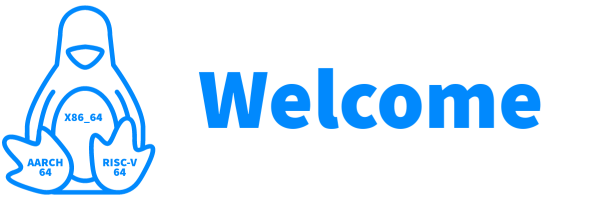
2024 Fundraise: 0% 100%
© 2006 - 2024 | Tobias Powalowski | Arch Linux Developer tpowa
Last update: 03.12.2024 06:47
Grub Menu
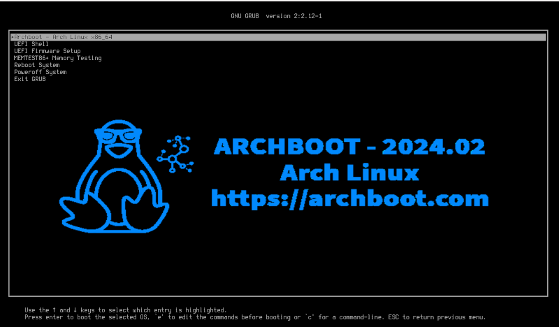
Early Userspace
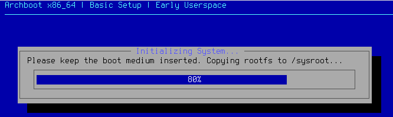
Message Of The Day - MOTD
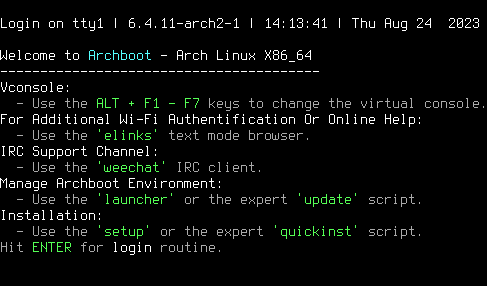
Basic Setup - Localization
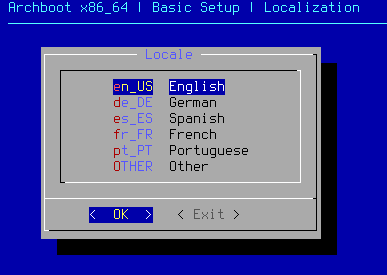
Basic Setup - Network
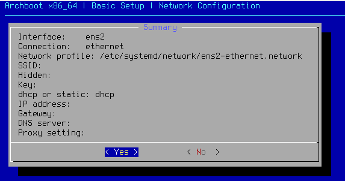
Basic Setup - Clock
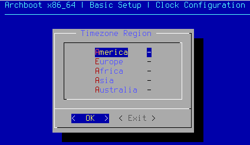
Basic Setup - Pacman
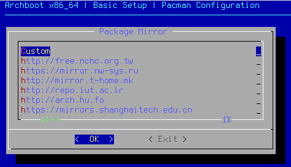
Launcher
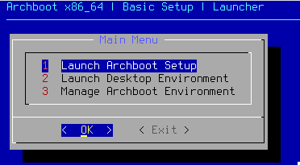
Setup
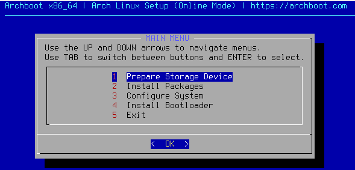
For Experts: CLI Manage Environment
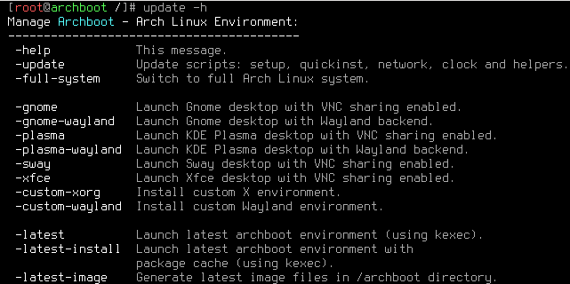
Update Script Running:
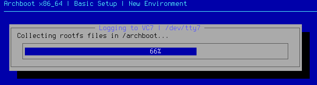
Gnome Desktop
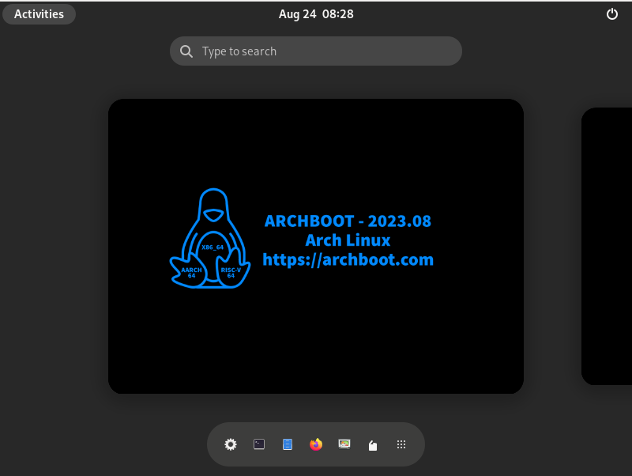
Plasma Desktop
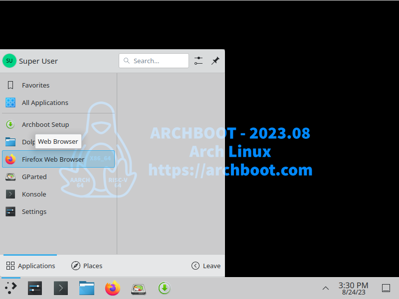
Sway Wayland Compositor
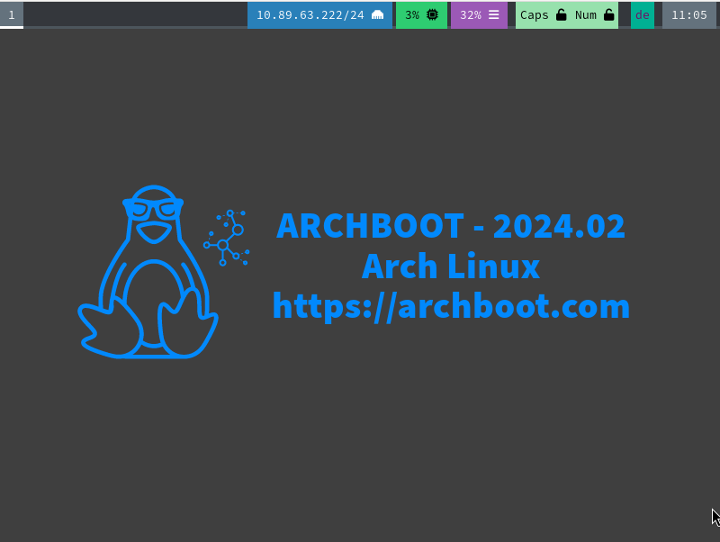
Xfce Desktop
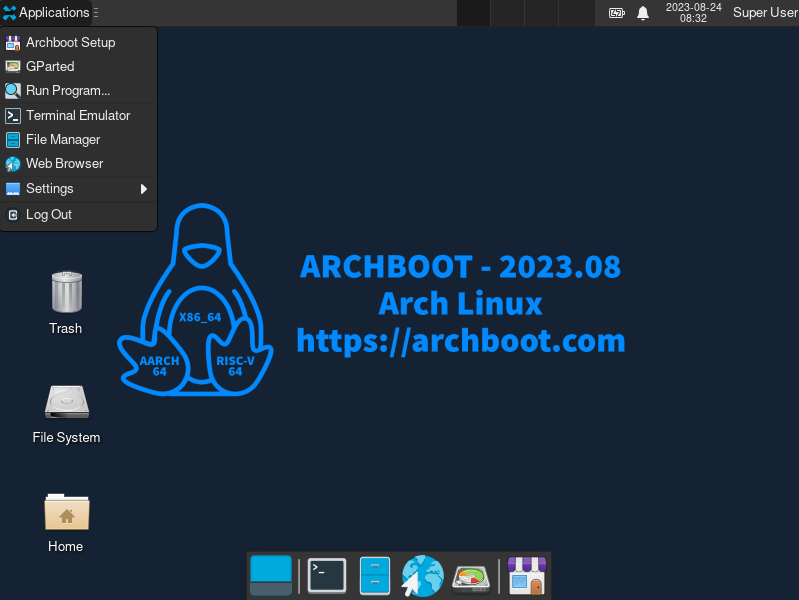